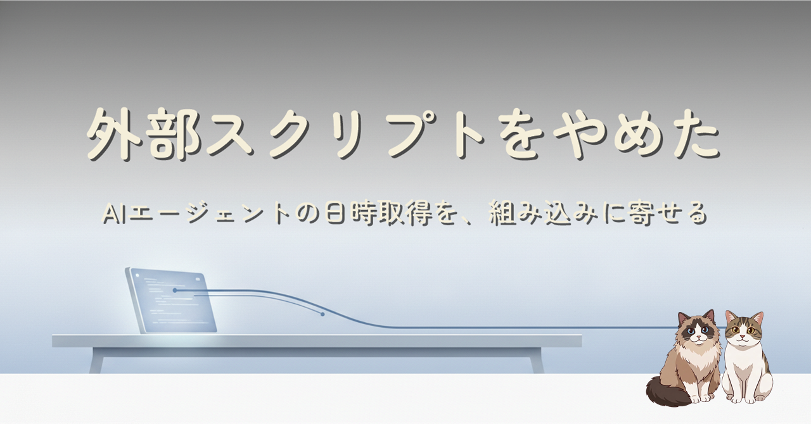
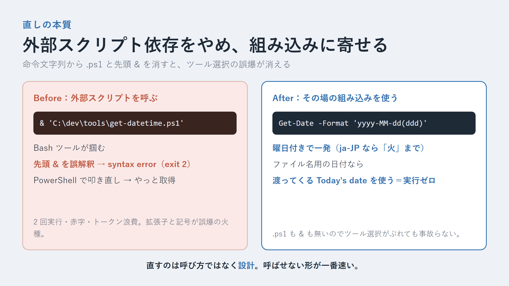

Windows で AI エージェント（Claude Code）に日時を取らせる小さな処理が、毎回赤いエラーを出していました。回避のラッパーを足しても直らない。原因は呼び方ではなく設計そのもので、外部スクリプトに整形を持たせて「どのシェルからでも呼べる」を目指したことが火種でした。組み込み機能と、すでに渡っている情報に寄せて根治した記録です。
AI エージェントにツール（シェル）選択を委ねている以上、命令文字列に含まれる拡張子や先頭の記号は「このツールで動かせ」という暗黙のシグナルとして働き、しかも実行時に揺れるツール選択とズレて誤爆します。日時取得を .ps1 / .sh / .cmd の外部スクリプトに持たせて「どこからでも呼べる」を狙ったのが、その火種でした。
そもそも Git Bash と WSL のように、名前が同じ bash でも中身とパス規約が違えば、単一コマンドで両対応することは原理的にできません。だから鏡像を増やす方向は行き止まりで、直し方は「呼ばせない」でした。曜日付きの日付はその場のシェルの組み込みで Get-Date -Format 'yyyy-MM-dd(ddd)'、ファイル名用の当日日付はエージェントに最初から渡っている情報を使う。命令文字列から .ps1 と先頭 & を消したら、ツール選択の誤爆ごと消えました。
